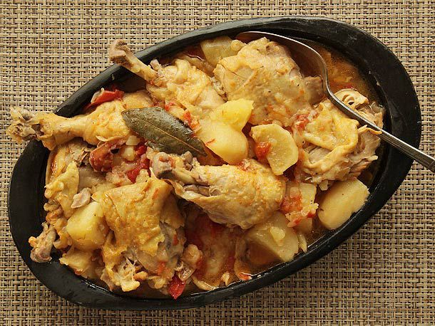

Chicken Stew

Description
Ridiculously tender meat, perfectly cooked potatoes, and richly flavorful broth. Ready to eat in less than 30 minutes.
Ingredients
- 4 large Russet or Yukon Gold potatoes, peeled and cut into 1- to 2-inch chunks
- 1 large onion, sliced into 1/4-inch slices (about 1 1/2 cups)
- 4 medium beefsteak tomatoes, cut into 1- to 2-inch chunks (about 3 cups)
- 1 whole chicken, back removed, cut into 8 pieces (about 4 pounds), or 4 whole chicken legs, cut into thighs and drumsticks
- 2 bay leaves
- Kosher salt and freshly ground black pepper
Steps
- Combine potatoes, onion, tomato, chicken pieces, bay leaves, and a large pinch of salt in a pressure cooker.
Toss with hands to combine. Seal lid and cook under high pressure for 25 minutes. Release pressure, remove
lid, season to taste, and serve.
Return to home